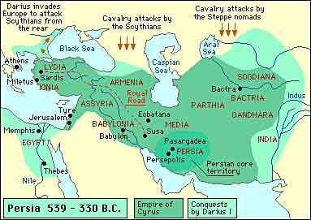

The Persian Empire vs. The Greek Empire: A Battle for Supremacy
By: Roger
Introduction
The ancient world was filled with empires that vied for supremacy over each other. However, none were as prominent as the Persian and Greek empires. These two civilizations have left a lasting legacy in history due to their contributions to art, science, and philosophy, among other things. More importantly, their battles for dominance have shaped the political landscape of the ancient world and set the stage for future empires to emerge.
The Persian Empire and the Greek Empire emerged at different times in history, with the former establishing itself in the 6th century BC and the latter in the 4th century BC. While they were separated by a few centuries, they share a few similarities, including their military might and size. The Persian Empire was known for its vastness, covering almost 3 million square miles and having a population of over 50 million people. Meanwhile, the Greek Empire was known for producing some of the greatest warriors and tacticians in history, including Alexander the Great, Leonidas, and Pericles.
The Persian Empire vs. The Greek Empire: A Battle for Supremacy explores the various aspects of these two empires that make them unique and their contributions to society. Throughout this website, we'll explore the political and cultural landscape of both empires and how they came into conflict with each other. We'll take a look at the various battles they fought and the rise and fall of their leaders. Lastly, we'll examine their legacies and the lasting impact they had on the world.
This website aims to educate readers on the historical significance of these two empires and the various factors that contributed to their rise and fall. We hope that readers will come away with a better understanding of the rich history that the Persian and Greek empires have left behind.
ad space
Persian Empire
- The Rise and Fall of the Persian Empire: A Tale of Conquest and Conflict
The Persian Empire, also known as the Achaemenid Empire, was one of the largest empires in ancient history. It spanned from modern-day Iran and Iraq to Egypt and into parts of Central Asia. The empire was founded by Cyrus the Great in 550 BC and lasted until it was conquered by Alexander the Great in 330 BC.
One of the most significant strengths of the Persian Empire was its highly organized administrative system. It was divided into satrapies, or provinces, each governed by a satrap, or governor, who reported directly to the king. This system allowed for efficient tax collection and ensured that the empire remained stable and connected over its vast territory.
However, with great power came great responsibility, and the Persian Empire was constantly at war with its neighbors. It faced many challenges from the Greeks, as they viewed Persia as a threat to their freedom and way of life.
One of the most famous battles between the Persian and Greek empires was the Battle of Thermopylae in 480 BC. King Leonidas of Sparta led a small force of Greeks against a massive Persian army, stalling their advance and buying time for the Greeks to prepare for the coming battle. The Greeks eventually won the overall war, but not without enduring significant losses.
The Persian Empire ultimately fell due to a combination of factors, including weak leadership, internal rebellions, and invasions from foreign forces. However, its legacy can still be felt today, as many of its customs and traditions were passed down and influenced cultures throughout the world.
In conclusion, the Persian Empire played a crucial role in shaping the ancient world, and its story is both fascinating and tragic. By understanding its rise and fall, we can gain insight into the complex nature of power and conflict in the world today.
ad space
Greek Empire
- The Rise of a Legendary Civilization
The Greek Empire, also known as Ancient Greece, is undoubtedly one of the most fascinating civilizations in the history of the world. The empire is often remembered for its rich contributions to philosophy, literature, art, and science, which has inspired modern-day society. The Greeks shaped the world we live in today, and their legacy continues to thrive in various aspects of cultural, political, and intellectual spheres.
The Greek Empire was a collective of city-states that thrived between 700 BC and 323 BC. It was composed of numerous regions that included Athens, Sparta, Corinth, Thebes, and others. During this era, the Greeks developed a highly advanced society that included principles such as democracy, citizenship, and freedom of expression. These values created a sense of national pride and unity among the Greeks.
The Greeks developed a highly advanced military system that helped them fend off attacks from neighboring empires. They trained their soldiers in rigorous drills and tactics that emphasized speed, endurance, and agility. Furthermore, the Greeks had access to state-of-the-art weaponry that included spears, shields, and swords.
The Ancient Greek World was home to several philosophical geniuses, including Socrates, Plato, and Aristotle. These philosophers helped shape the empire's cultural landscape by introducing concepts such as logic, reason, and ethics. Moreover, the Greeks were also renowned for their contributions to mathematics, science, and medicine.
In conclusion, the Greek Empire was one of the most formidable civilizations during its time. Its numerous achievements have left an immense legacy that continues to shape modern human society. Whether it is the architecture, literature, art, or philosophy, the Greeks continue to inspire and captivate generations of scholars and intellectuals.
ad space
Persian vs Greek Empire
The Persian Empire vs. The Greek Empire: A Battle for Supremacy is a topic that has fascinated historians for centuries. The rivalry between these two ancient civilizations was one that shaped the course of history, with each empire seeking to establish dominance over the other. From epic battles to cultural clashes, the Persian vs Greek Empire subheading delves into the intricacies of this age-old conflict and the impact it had on both empires.
The Persian Empire, under the rule of King Cyrus the Great, was a vast empire that stretched across a significant portion of Asia, from modern-day Iran to Egypt. On the other hand, the Greek Empire was a collection of city-states that spanned the Mediterranean region. Despite their differences in size and structure, both empires shared a desire for power and dominance.
One of the most memorable battles between the Persian and Greek Empires was the Battle of Thermopylae. Led by King Leonidas of Sparta, a small group of Greek soldiers fought against a massive Persian army. Despite being vastly outnumbered, the Greeks managed to hold off the Persians for three days before ultimately succumbing to their enemy. This battle became a symbol of Spartan bravery and resilience in the face of overwhelming odds.
Another aspect of the Persian vs Greek Empire rivalry was their differing cultural values. The Persians were known for their luxurious lifestyle and passion for art and literature, while the Greeks valued individual achievement and were renowned for their philosophical and scientific advancements.
Ultimately, the conflict between these two empires came down to a battle for supremacy, as each sought to impose its will on the other. The Persian vs Greek Empire subheading offers a fascinating look into this epic rivalry, providing a comprehensive overview of the conflict's most significant moments and the impact it had on both empires.
ad space
Conclusion
Throughout history, the Persian Empire and the Greek Empire have engaged in battles and struggles over territory and political power. These empires were both influential and significant, with major accomplishments that have shaped the course of world history. As this website has demonstrated, the Persian Empire and the Greek Empire were two of the most powerful and dominant empires in their respective eras.
After providing an in-depth exploration of both empires, it is time to draw a conclusion. It is clear that the Persian and Greek empires were incredibly influential and powerful, with significant impacts on the world. Both empires possessed unique strengths and weaknesses, along with their own cultural and philosophical perspectives.
From a military perspective, the Persian Empire's cavalry and archers were unmatched, while the Greek phalanx system was a superior infantry tactic. Both empires have left a lasting impact, and their influence is still felt in modern times.
In terms of cultural achievements, the Persian Empire was known for its advancements in science, art, and literature, while the Greek Empire was renowned for its philosophy, theater, and democracy.
One of the most significant outcomes of the conflict between the Persian and Greek empires was the creation of a new era in world history. The Greek Empire's victory led to the emergence of the Hellenistic period, which impacted the world's intellectual and cultural development for centuries to come.
In conclusion, the Persian Empire and the Greek Empire are two of the most influential empires in world history. While the Greek Empire ultimately emerged victorious in their conflict, both empires made great contributions to the world's cultural and intellectual heritage. Understanding these empires and the events that took place between them is crucial to understanding the modern world.
ad space